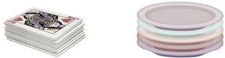

A stack is an abstract data type (ADT), commonly used in most programming languages. It is named stack as it behaves like a real-world stack, for example − deck of cards or pile of plates etc.
A real-world stack allows operations at one end only. For example, we can place or remove a card or plate from top of the stack only. Likewise, Stack ADT allows all data operations at one end only. At any given time, We can only access the top element of a stack.
This feature makes it LIFO data structure. LIFO stands for Last-in-first-out. Here, the element which is placed (inserted or added) last, is accessed first. In stack terminology, insertion operation is called PUSH operation and removal operation is called POP operation.
Below given diagram tries to depict a stack and its operations −

A stack can be implemented by means of Array, Structure, Pointer and Linked-List. Stack can either be a fixed size one or it may have a sense of dynamic resizing. Here, we are going to implement stack using arrays which makes it a fixed size stack implementation.
Stack operations may involve initializing the stack, using it and then de-initializing it. Apart from these basic stuffs, a stack is used for the following two primary operations −
push() − pushing (storing) an element on the stack.
pop() − removing (accessing) an element from the stack.
When data is PUSHed onto stack.
To use a stack efficiently we need to check status of stack as well. For the same purpose, the following functionality is added to stacks −
peek() − get the top data element of the stack, without removing it.
isFull() − check if stack is full.
isEmpty() − check if stack is empty.
At all times, we maintain a pointer to the last PUSHed data on the stack. As this pointer always represents the top of the stack, hence named top. The top pointer provides top value of the stack without actually removing it.
First we should learn about procedures to support stack functions −
Algorithm of peek() function −
begin procedure peek return stack[top] end procedure
Implementation of peek() function in C programming language −
int peek() {
return stack[top];
}
Algorithm of isfull() function −
begin procedure isfull
if top equals to MAXSIZE
return true
else
return false
endif
end procedure
Implementation of isfull() function in C programming language −
bool isfull() {
if(top == MAXSIZE)
return true;
else
return false;
}
Algorithm of isempty() function −
begin procedure isempty
if top less than 1
return true
else
return false
endif
end procedure
Implementation of isempty() function in C programming language is slightly different. We initialize top at -1, as index in array starts from 0. So we check if top is below zero or -1 to determine if stack is empty. Here's the code −
bool isempty() {
if(top == -1)
return true;
else
return false;
}
The process of putting a new data element onto stack is known as PUSH Operation. Push operation involves series of steps −
Step 1 − Check if stack is full.
Step 2 − If stack is full, produce error and exit.
Step 3 − If stack is not full, increment top to point next empty space.
Step 4 − Add data element to the stack location, where top is pointing.
Step 5 − return success.

if linked-list is used to implement stack, then in step 3, we need to allocate space dynamically.
A simple algorithm for Push operation can be derived as follows −
begin procedure push: stack, data
if stack is full
return null
endif
top ← top + 1
stack[top] ← data
end procedure
Implementation of this algorithm in C, is very easy. See the below code −
void push(int data) {
if(!isFull()) {
top = top + 1;
stack[top] = data;
}else {
printf("Could not insert data, Stack is full.\n");
}
}
Accessing the content while removing it from stack, is known as pop operation. In array implementation of pop() operation, data element is not actually removed, instead top is decremented to a lower position in stack to point to next value. But in linked-list implementation, pop() actually removes data element and deallocates memory space.
A POP operation may involve the following steps −
Step 1 − Check if stack is empty.
Step 2 − If stack is empty, produce error and exit.
Step 3 − If stack is not empty, access the data element at which top is pointing.
Step 4 − Decrease the value of top by 1.
Step 5 − return success.
A simple algorithm for Pop operation can be derived as follows −
begin procedure pop: stack
if stack is empty
return null
endif
data ← stack[top]
top ← top - 1
return data
end procedure
Implementation of this algorithm in C, is shown below −
int pop(int data) {
if(!isempty()) {
data = stack[top];
top = top - 1;
return data;
}else {
printf("Could not retrieve data, Stack is empty.\n");
}
}
For a complete stack program in C programming language, please click here.